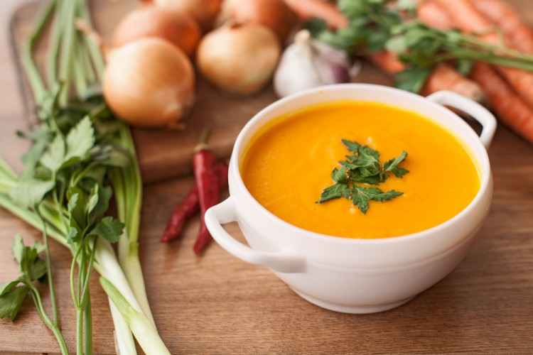
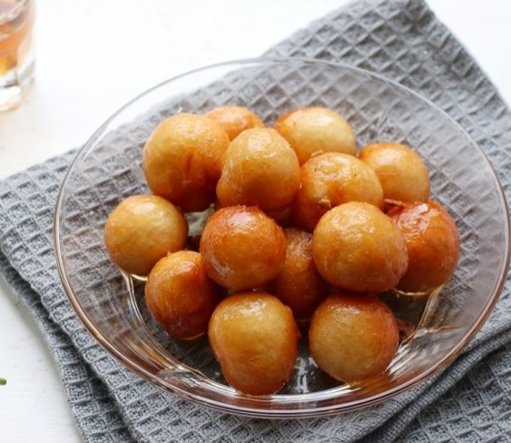
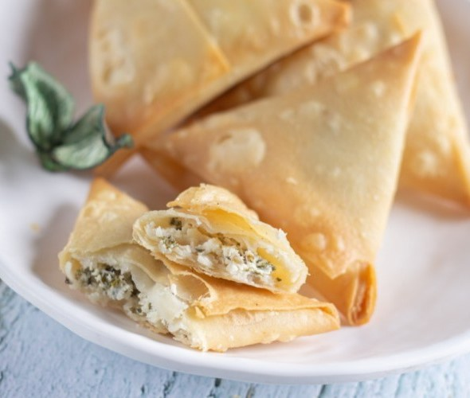

Ramadan Recipes
Lentil soup:

Ingredients:Lentils: 1 cup (rinsed and drained)
Garlic: 2 cloves (minced)
Salt: 1 teaspoon
Tomato: 1 large (chopped)
Carrot: 1 large (chopped)
Onion: 1 (chopped)
Cooking cream: 1 cup
Cumin: 1 teaspoon
Dried coriander: 1 tablespoon
Chili powder: 1/4 teaspoon
Water: 1 liter
Instructions:
Place lentils, tomato, carrot, onion, garlic, cumin, salt, dried coriander, and chili powder in a deep pot on the stove. Pour water over the ingredients and let it simmer until the lentils are cooked and the mixture is boiling. Transfer the mixture to a blender and blend until smooth. Return the soup to the heat and let it simmer for about 5 minutes until it starts to boil again, then add the cooking cream and stir. Pour the soup into serving bowls and serve hot.
Lugaimat:

For the syrup:Sugar: 2 cups
Water: 1 cup
Lemon juice: 1 teaspoon (sour)
Orange blossom water: as desired
For the dough:
Flour: 3 cups (all-purpose)
Instant yeast: 2 teaspoons
Cornstarch: 3 teaspoons
Sugar: 3 teaspoons
Salt: 1/4 teaspoon
Milk: 1 tablespoon (dry)
Lukewarm water: 1.5 cups
Vegetable oil: as needed (for frying)
Instructions:
For the dough: Add flour to the bowl along with instant yeast, sugar, salt, cornstarch, dry milk, and gradually pour water while kneading repeatedly until a elastic dough forms. Let the dough rest for forty minutes. After the specified time, shape the dough into circles using your hands. Wet a spoon with water, take a portion of the dough with the spoon, shape it into a circle with your hands, and repeat the process until the entire dough is used. Heat the oil and fry the dough circles at medium heat until they are partially cooked, then strain and set aside. Just before serving, fry the dough circles again until they become golden brown and crispy, then strain. For the syrup: Boil water in a small pot (or a large saucepan) with sugar until the sugar dissolves. Reduce the heat, let the mixture simmer again before adding the sour lemon juice. Allow the ingredients to boil again, then add rose water. When serving, pour the syrup over the fried dough circles and mix.
Cheese Samboosa:

Ingredients:
Samboosa Wrappers: 12 sheets
Mozzarella Cheese: 1 cup (shredded)
Cream Cheese: 8 squares
Feta Cheese: 1 and a half tablespoons (full-fat / salty)
Flour: 2 and a half tablespoons
Water: 2 tablespoons
Vegetable Oil: as needed (for frying)
Instructions:
In a medium-sized bowl, mash the cream cheese and salty feta cheese with a fork until smooth. Add the shredded mozzarella cheese and mix well until thoroughly combined. Set aside. In a small bowl, mix the flour and water together until the mixture becomes smooth, forming a paste similar to white glue. Fold a samboosa sheet according to the instructions on the package and fill it with the prepared cheese mixture. Work with one samboosa sheet at a time, keeping the rest covered with a cloth to prevent drying. Place the samboosas in the freezer until ready to fry. They can be stored stuffed in the freezer by placing them in freezer bags for up to a month. When using, let them sit outside the freezer for 10 to 15 minutes before frying. Frying the Samboosas: 6. Heat an adequate amount of oil in a frying pan, being careful not to use too much oil, or the cheese might leak. Place enough samboosas to fill the pan without overcrowding it. Fry for 2 to 3 minutes on one side until it turns golden brown, then flip to the other side and cook for another minute or two until it also turns brown. Transfer to paper towels to drain excess oil and arrange them on a serving plate.